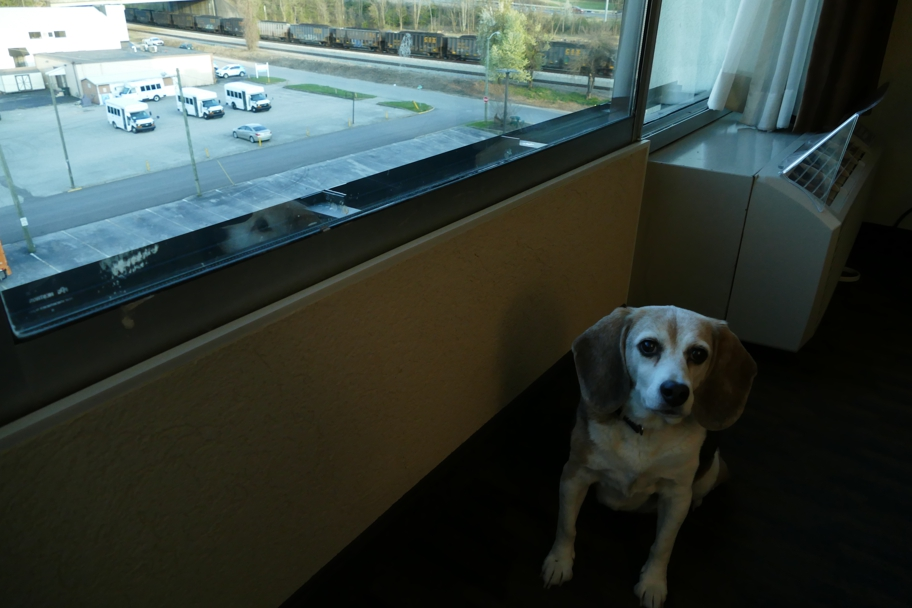

Just below the New River Gorge Bridge, the New River joins the Gauley River and becomes the Kanawha River. (I had learned at the welcome center that the state was almost named Kanawha.) Route 60 provides a beautiful drive along the river, but every town on the river, including our destination, Charleston, has some sort of big mining or industrial plant. From our hotel room we could see these railroad cars full of coal.
Charleston Wallace Beagle West Virginia